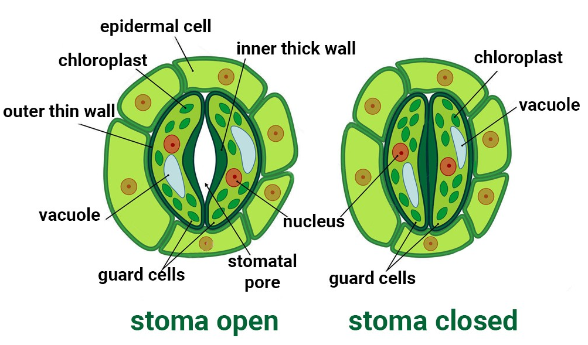

Transpiration, a fundamental process in botany, is the loss of water by plants in the form of water vapor,
primarily through the leaves, but also through stems and flowers. This process is crucial for water and nutrient
transport within the plant, as well as for maintaining plant temperature Elaboration:
Water Movement:
Transpiration is driven by the movement of water through the plant from the roots, where it's absorbed,
to the leaves, where it evaporates into the atmosphere.
Stomata:
The majority of transpiration occurs through tiny pores called stomata on the leaf surface.
Stomatal opening and closing, controlled by guard cells, regulates the rate of transpiration.
Cuticular and Lenticular Transpiration:
While stomatal transpiration is the primary route, water can also be lost through the plant cuticle (cuticular transpiration)
and through lenticels in the bark (lenticular transpiration).
Mechanisum of guard cell Movement
Guard cell movement, crucial for regulating gas exchange in plants, is primarily driven by changes in water
potential and turgor pressure within the guard cells themselves. This movement is influenced by a combination of factors
including light, CO2 levels, and water availability.
How Guard Cells Function — Biological Strategy — AskNature
Here's a more detailed explanation:
1. Ion Transport and Osmotic Pressure:
Guard cells actively transport potassium (K+) ions and other solutes into their cytoplasm.
This accumulation of solutes increases the osmotic potential of the guard cells.
Water moves into the guard cells by osmosis, causing them to become turgid (swollen with water).
2. Turgor Pressure and Stomatal Opening:
The thickened, radial cell walls of guard cells are oriented in a way that causes them to bend outward when turgid.
This bending action pulls the two guard cells apart, opening the stomatal pore and allowing gas exchange.

Antitransportation:
botany are substances applied to plants to reduce transpiration, the process by which plants lose water through
their leaves. They work by reducing the opening of stomata, the tiny pores on leaves where water vapor escapes,
and increasing the resistance of the leaf to water vapor diffusion. This helps protect plants from drying out,
especially under stress conditions like drought.
Here's a more detailed explanation:
How Antitranspirants Work:
Stomatal Regulation:
Antitranspirants can either directly reduce the opening of stomata or alter the plant's internal water balance,
leading to stomatal closure.
Examples of Antitranspirants:
Synthetic Compounds:
Silicon oils, low viscosity waxes, and various plastics can be used as film-forming antitranspirants.
Plant Growth Regulators:
Abscisic acid (ABA), a plant hormone, can naturally induce stomatal closure under stress, effectively acting as an
antitranspirant.